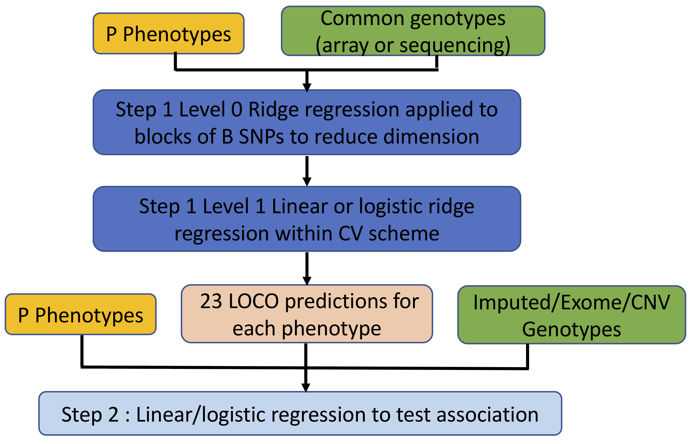

Overview
This page provides an overview of the models and methods implemented in regenie. A full description is given in our BioRxiv pre-print.
regenie carries out genome-wide association tests for both quantitative and binary (case-control) phenotypes. It is designed to handle
- A large number of samples. For example, it is ideally suited to the UK Biobank dataset with 500,000 samples.
- A combination of genetic data from a micro-array, imputation and exome sequencing.
- A large number of either quantitative traits (QTs) or binary (case-control) traits (BTs)
- Accounting for a set of covariates
An overview of the regenie method is provided in the figure below. Essentially, regenie is run in 2 steps:
- In the first step a subset of genetic markers are used to fit a whole genome regression model that captures a good fraction of the phenotype variance attributable to genetic effects.
- In the second step, a larger set of genetic markers (e.g. imputed markers) are tested for association with the phenotype conditional upon the prediction from the regression model in Step 1, using a leave one chromosome out (LOCO) scheme, that avoids proximal contamination.

Step 1 : Whole genome model
In Step 1 a whole genome regression model is fit at a subset of the total set of available genetic markers. These are typically a set of several hundred thousand () common markers from a micro-array.
Ridge regression (level 0)
regenie reads in the markers in blocks of consecutive markers (--b option).
In each block, a set of ridge regression
predictors are calculated for a small range of shrinkage
parameters (using --l0 option [default is 5]) .
For a block of SNPs in a matrix and phenotype vector we calculate predictors
where
The idea behind using a range of shrinkage values is to capture the unknown number and size of truly associated genetic markers within each window. The ridge regression takes account of Linkage disequilibrium (LD) within each block.
These predictors are stored in place of the genetic markers in matrix , providing a large reduction in data size. For example, if and and shrinkage parameters are used, then the reduced dataset will have predictors.
Ridge regression is used in this step for both quantitative and binary traits.
Cross-validation (level 1)
The predictors generated by the ridge regression step will all be positively correlated with the phenotype. Thus, it is important to account for that correlation when building a whole genome wide regression model.
When analyzing a quantitative trait we use a second level of ridge regression on the full set of predictors in . This approach is inspired by the method of stacked regressions [1].
We fit the ridge regression for a range of shrinkage parameters (--l1 option) and choose a single
best value using K-fold cross validation scheme. This assesses the
predictive performance of the model using held out sets of data, and aims to control
any over-fitting induced by using the first level of ridge regression
to derive the predictors.
In other words, we fit the model
where is estimated as and the parameter is chosen via K-fold cross-validation.
For binary traits, we use a logistic ridge regression model to combine the predictors in
where is the probability of being a case and captures the effects of non-genetic covariates.
Genetic predictors and LOCO
Once has been estimated we can construct the genetic prediction
Also, since each column of the matrix will be associated with a chromosome we can can also construct a genetic prediction ignoring any one chromosome, by simply ignoring those columns when calculating the prediction. This is known as the Leave One Chromosome Out (LOCO) approach. These LOCO predictions are valuable at Step 2 of regenie when each marker is tested for associated (see below).
For binary traits, it is the linear predictor in a logistic regression model using LOCO that is saved, and used as an offset when fitting logistic regression models to test for association.
Multiple phenotypes
The dimension reduction step using ridge regression can be used very efficiently to model multiple phenotypes at once. The ridge regression equations for a block of SNPs in a matrix and a single phenotype in a matrix take the form
where does not depend on
If instead phenotypes are stored in columns of a matrix , then the matrix can be applied jointly to calculate the matrix of estimates , and this can take advantage of parallel linear algebra implementations in the Eigen matrix library.
Covariates
Covariates, such as age and sex and batch effect variables can be included in the regenie model.
For quantitative traits, any covariates are regressed out of phenotypes and genotypes before fitting the model.
For binary traits, we fit a null model with only covariates, and use predictions from that model as an offset when fitting the logistic regression model.
Step 2 : Association testing
In Step 2 a larger set of markers are tested for association with the trait (or traits). As with Step 1, these markers are also read in blocks of markers, and tested for association. This avoids having to have all markers stored in memory at once.
Quantitative traits
For quantitative traits, we use a linear regression model for association testing.
- Covariates are regressed out of the phenotypes and genetic markers.
- The LOCO predictions from Step 1 are removed from the phenotypes.
- Linear regression is then used to test association of the residualized phenotype and the genetic marker.
- Parallel linear algebra operations in the Eigen library are used where possible.
Binary traits
For binary traits, logistic regression is used to test association of the phenotype and the genetic marker.
The logistic regression model includes the LOCO predictions from Step 1 as an offset. Covariates are included in the linear predictor in the usual way.
When the case-control ratio is imbalanced, standard association tests don't control Type I error well at rare genetic markers. regenie has two options to handle this
Firth logistic regression
Standard maximum likelihood estimates are generally biased. The Firth correction [2] removes much of the bias, and results in better calibrated test statistics. The correction involves adding a penalty term to the log-likelihood,
where the penalty term corresponds to the use of Jeffrey's Prior. This prior has the effect of shrinking the effect size towards zero.
regenie uses a Firth correction when the p-value from the standard
logistic regression test is below a threshold (default 0.05).
It also includes a novel, accurate and fast approximate Firth correction which
is ~60x faster than the exact Firth correction
(see the option --firth).
Saddle point approxiation (SPA) test
The SPA test approximates the null distribution of the test statistic by approximating the cumulant generating function of the test statistic, which involves all of the higher order moments [3,4]. This provides a better estimation of the tail probabilities compared to using standard asymptotic theory which relies on the normal approximation and uses only the first two moments of the dsitribution. A tail probability is obtained as
and is the cumulant generating function of the test statistic and
is obtained by using a root-finding algorithm for . As this approximation
has been found not to work very well for ultra-rare variants, a minimum minor
allele count (MAC) is used to filter out these variants before testing (option --minMAC).
Missing Phenotype data
With QTs, missing values are mean-imputed in Step 1 and they are
dropped when testing each phenotype in Step 2 (unless using --force-impute).
With BTs, missing values are mean-imputed in Step 1 when fitting the level 0 linear ridge regression and they are dropped when fitting the level 1 logistic ridge regression for each trait. In Step 2, missing values are dropped when testing each trait.
To remove all samples that have missing values at any of the
phenotypes from the analysis, use option --strict in step 1 and 2.
This can also be used when analyzing a single trait to only keep individuals with
complete data by setting the phenotype values of individuals to remove to NA.
References
[1] L. Breiman (1996) Stacked Regressions. Machine Learning, 24, 49-64.
[2] D. Firth (1993) Bias reduction of maximum likelihood estimates. Biometrika 80, 27–38.
[3] R. Butler (2007) Saddlepoint Approximations with Applications. Cambridge University Press.
[4] R. Dey et al. (2017) A Fast and Accurate Algorithm to Test for Binary Phenotypes and Its Application to PheWAS.The American Journal of Human Genetics 101, 37–49.